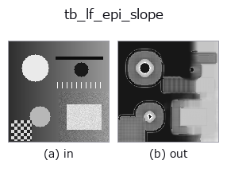

typed op• 데이터 종류: lightfield → image
• 호출: fullseye.apply(img, "tb_lf_epi_slope", a=0.5, b=0.5)(2-D 는 이미지 1 장 + 스칼라 노브 2 개 a,b∈[0,1] 모델)
• GPU: 없음(CPU 참조 구현만)

*그림은 128×128 합성 입력에서 실제로 실행한 출력. 왼쪽이 입력, 오른쪽이 출력. 점군은 위에서 본 산점도(밝기 = z), 1-D 열은 꺾은선, 볼륨은 z 방향 최대값 투영, 동영상은 가운데 프레임, 복소 영상은 진폭이며, 그림이 되지 않는 반환값은 값 자체를 표시한다.*
*노브 a 는 출력을 바꾸지 않는다(실측: 0.1 / 0.5 / 0.9에서 동일).*
*노브 b 는 출력을 바꾸지 않는다(실측: 0.1 / 0.5 / 0.9에서 동일).*
단계(앞에 오는 op → 이 op, 왼쪽에서 오른쪽으로):
▸ tb_lf_epi_slope: 단계 (문서 사이트)
다른 영상에서도(합성 장면 / 사진 / 동전. 윗줄이 입력, 아랫줄이 그 출력. 노브는 기본값):
▸ tb_lf_epi_slope: 다른 입력 이미지 (문서 사이트)
EPI 선의 방향으로부터 화소별 기울기를 냅니다(구조 텐서, 전단으로 정밀화).
> 아래 상세 설명은 원문입니다 —— 요약과 제목은 번역되어 있습니다.
A scene point traces a straight line in the epipolar-plane image (lf_epi), so along that line the intensity is constant:
E_u + s * E_x = 0. Accumulating that constraint over the whole angular grid and a window x window spatial neighbourhood gives the closed-form least-squares slope s = -(J_ux + J_vy) / (J_xx + J_yy) with J_ab = sum(E_a * E_b) — both the horizontal and vertical EPI directions pooled.
Why it is iterated (fixed 2026-11-03). A finite difference across views measures a displacement of s px per view, while a finite difference across pixels measures one of 1 px; for a texture component of angular frequency w the ratio is sin(w s) / sin(w) (the pre-fix central differences), equal to s only at |s| in {0, 1}. That is the classic statement that the structure tensor is accurate only for disparities in a small range around zero (Wanner & Goldluecke, CVPR 2012 and TPAMI 36(3) 2014, who handle larger ranges by shearing the light field). So the estimator shears the field by an integer slope k (integer shifts: no resampling blur), measures the residual r = s - k, sets k <- round(k + r) per pixel and repeats until no pixel changes (at most EPI_MAX_ROUNDS rounds, at most EPI_MAX_SHEARS distinct shears). The residual is measured with a matched discretisation (adjacent-view difference against the mean of the two views' Gaussian derivatives, inner scale EPI_INNER_SIGMA), whose error is O(r^3 w^2) with |r| <= 1/2.
Measured 2026-11-03, median over the interior of single-layer lf_synthesize fields (64x64, edge="wrap"), s in [-3, 3] in steps of 0.25: error <= 0.006 px for 5x5 and 9x9 views, <= 0.007 px for 4x4 (even count) and <= 0.012 px for 3x3 and for a single row of 6 views, at texture sigma 1.0 / 1.5 / 2.0 / 5.0 px, for windows 5 / 9 / 15 (the pre-fix estimator read -1.388 for -1.5 at sigma 2 and 1.46 for 2.0 at sigma 1.5). Integer slopes are exact to 1e-9 on a wrapped field. Valid range: the shear ladder starts at k = 0, so the first pass must see the right sign and a non-vanishing magnitude: that holds for |s| <= 3 at any texture correlation length >= 1 px, and (measured) up to |s| = 8 at sigma >= 2; at sigma 1 it fails beyond |s| = 5 (s = 6 read as 0.25 — the texture is aliased: it moves more than its correlation length several times per view). Near an occlusion boundary the window mixes two slopes (no estimator of a single orientation per window can avoid that). With edge="nearest" input the outer |k|*(N-1)/2 px of the frame see clamped border pixels.
Returns (slope_map, energy): the (H, W) slope map (centre-view coordinates) and the (H, W) gradient energy J_xx + J_yy of the unsheared field (the first pass's denominator). Pixels whose energy is below *min_energy* have no measurable parallax (a flat patch of sky); their slope is set to 0 and their energy reported as-is, so you threshold on energy instead of being handed a plausible-looking number divided by ~0.
Raises ValueError: *lf* not a valid light field, an angular/spatial shape where *neither* EPI direction carries information (the horizontal EPI needs U >= 2 and W >= 2, the vertical needs V >= 2 and H >= 2), an even or non-positive *window*, a non-positive *min_energy*.
Typed bridge of the lightfield op lf_epi_slope into the 2-D evolution registry: the same implementation, called under the op(v, a, b) convention. This op has no tunable parameter; a and b are unused.
• 샘플 데이터 카탈로그(DL URL / 라이선스) —— 2-D 는 skimage.data(BSD/public)+ 합성, 3-D 는 실데이터 소스(Stanford/PDS 등)의 DL URL.
• 연산자의 내력·참고문헌 —— 이 연산자 족의 바탕이 된 연구/기법의 출처.
아래 프로그램은 실제로 실행됨을 확인했습니다(그림과 같은 입력). Studio 도움말에서는 이 블록이 버튼이 되어 즉시 불러와 실행할 수 있습니다.
img_to_lightfield 0.50 0.50 tb_lf_epi_slope 0.50 0.50
아래 예제는 원래의 대장 op lf_epi_slope를 호출한다. 이 브리지 op는 같은 구현을 fn(v, a, b) 규약에 맞춘 것뿐이므로 동작은 그대로 적용된다(호출 형식만 다름).
• lightfield_depth — py -3.11 examples/lightfield_depth.py
• poc_lightfield_depth — py -3.11 examples/poc_lightfield_depth.py
image 를 입력으로 받는 것)identity · gaussian · mean_box · mean_box_wh · bilateral · kuwahara · unsharp · median
typed)tb_points_to_voxel · tb_estimate_point_normals · tb_iss_keypoints · tb_project_points · tb_render_point_depth · tb_points_render · tb_statistical_outlier_removal · tb_radius_outlier_removal
*Provenance: ops.py — 2D 연산자 레지스트리. 이 op 노트는 tools/opdocs.py md 가 자동 생성합니다(직접 편집하지 마세요).*
© 2026 Kazufumi Furuse — Fullseye operator documentation. Licensed under Apache-2.0.